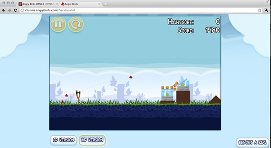
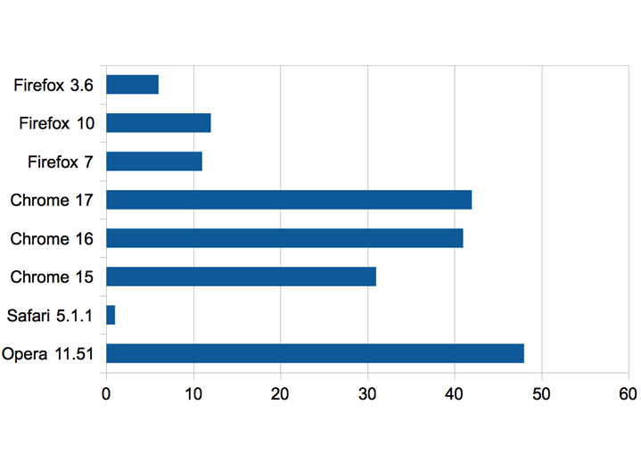

Desenvolvimento de jogos utilizando as tecnologias dos navegadores compatíveis com HTML5
Willian Araujo Molinari
Motivação
- HTML5 está se tornando o padrão de desenvolvimento para a internet.
- Jogos casuais pela internet estão se tornando cada vez mais populares.
- Pouco conteúdo organizado sobre HTML5.
- Falta de conhecimento dos profissionais sobre o uso de HTML5 em jogos casuais.
- Falta de material formal sobre o assunto.
Objetivos
- Comparar HTML5 com as outras tecnologias utilizadas no mercado.
- Analisar sua viabilidade para desenvolvimento de jogos casuais.
- Compilar material sobre o estado atual do HTML5 para desenvolvedores de jogos casuais.
Metodologia
- Levantamento de referências.
- Análise das especificações atuais disponíveis no órgão especificador.
- Busca de exemplos de jogos casuais desenvolvidos com HTML5.
- Testes de performance para comparação das tecnologias.
- Comparação dos problemas de fragmentação e portabilidade.
- Recursos para desenvolvimento e suporte.
Jogos casuais
- Não necessitam de muito tempo de aprendizado.
- A recompensa do jogador é rápida.
-
Exemplos

Fonte: http://www.javascriptgaming.com/ e http://chrome.angrybirds.com
Composição das páginas executadas no navegador
-
HTML
- Criação de documentos estruturados
-
CSS
- Criação de estilos para páginas HTML
-
Javascript
- Manipulação de elementos do documentos HTML
-
Navegadores
- Plataforma para execução dos itens acima
HTML5
- Linguagem de marcação
- Buzzword
- Canvas
- Transformações CSS3
- SVG
- Websockets
- Offline cache
- Local Storage
- Áudio
- WebGL
Canvas
- Uma API que permite fazer desenhos no navegador.
- Criação de formas geométricas.
- Importação de imagens.
- Suporte nos navegadores modernos.
Fonte: http://html5wow.com
DOM e transformações CSS3
- Desenvolvimento de jogos sem a utilização de canvas.
- Compatível com grande parte dos navegadores por seguir o padrão atual de criação de páginas de internet.
- Evita o redesenho dos objetos bastando reposiciona-los.
- Utilização de efeitos CSS3 aceleradas por hardware.
SVG
- Utilização de gráficos vetoriais no navegador.
- Animações diretamente no navegador.
Websockets
- Sockets no navegador.
- Mantem uma conexão direta com o servidor.
- Troca de informações mais rapidamente.
- Utilização para jogos multijogadores.
Offline cache e Local storage
- Jogos disponíveis sem acesso constante a internet.
- Dá ao jogador a possibilidade de jogar em qualquer lugar.
- Economia de banda.
- Permite guardar informações sobre o jogo localmente.
Áudio
- Implementação nativa para tocar áudio no navegador.
- Grande suporte nos navegadores.
- WebAudioApi e o áudio em tempo real.
- Subsídio para produzir toda a sonoplastia necessária para um jogo casual.
WebGL
- Aceleração 3D via navegador.
- Acesso a GPU utilizando o navegador.
- Baseado em OpenGL ES.
- Varios navegadores adicionando suporte.
Fonte: http://operasoftware.github.com/Emberwind/
Jogando e aprendendo
Tecnologias utilizadas para desenvolvimento de jogos para a internet
- HTML5
- Adobe Flash
- Java applets
- Unity3D
Performance 2D no início de 2010

Fonte: http://www.timo-ernst.net/wp-content/uploads/2010/09/ria-timo-ernst.pdf
Performance 2D no fim de 2011

Fonte: Código feito por Timo Ernst (2010), executado novamente por Willian Molinari.
Performance 3D com Flash e stage3D

Fonte: Código de teste feito por Felix Turner (2011), executado novamente pelo autor desse trabalho.
Performance 3D com WebGL e Javascript

Fonte: Código de teste feito por Felix Turner (2011), executado novamente pelo autor desse trabalho.
Portabilidade e fragmentação
- O jogo será desenvolvido uma vez e ficará disponível para computadores e celulaes.
- A grande maioria dos dispositivos pessoais atuais possuem um navegador para acesso a internet.
- Vantagens e desvantagens de possuir um código para vários dispositivos.
Recursos para desenvolvimento
- Unity3D: Unity Editor e ferramentas.
- Java Applets: Várias IDEs e vários frameworks Java.
- Flash: Flash IDE e muitas bibliotecas Actionscript.
- HTML5: Poucas bibliotecas maduras e muitas em desenvolvimento.
Suporte, desenvolvimento e investimento
- Unity3D é proprietário e desenvolvido pela Unity.
- Java é proprietário e desenvolvido pela Oracle.
- Flash é proprietário e desenvolvido pela Adobe.
- HTML5 tem sua especificação criada por um comitê.
- Empresas e organizações que contribuem com o HTML5:
Considerações finais
- HTML5 é uma tecnologia que está em constante evolução.
- Grandes empresas da internet estão investindo no seu crescimento.
- As funcionalidades básicas para o desenvolvimento de jogos casuais simples já estão disponíveis.
- A performance está em constante evolução e está aceitável para jogos casuais simples.
- Atualmente HTML5 não é uma solução adequada para jogos mais complexos.
Pesquisas futuras
- Performance em dispositivos móveis.
- Modelo de negócio com jogos feitos com HTML5 e Javascript.
- Melhoria na aceitação dos jogos para navegador nos celulares.
- Análise da base de navegadores instalados.
Perguntas?
Willian Molinari
47458